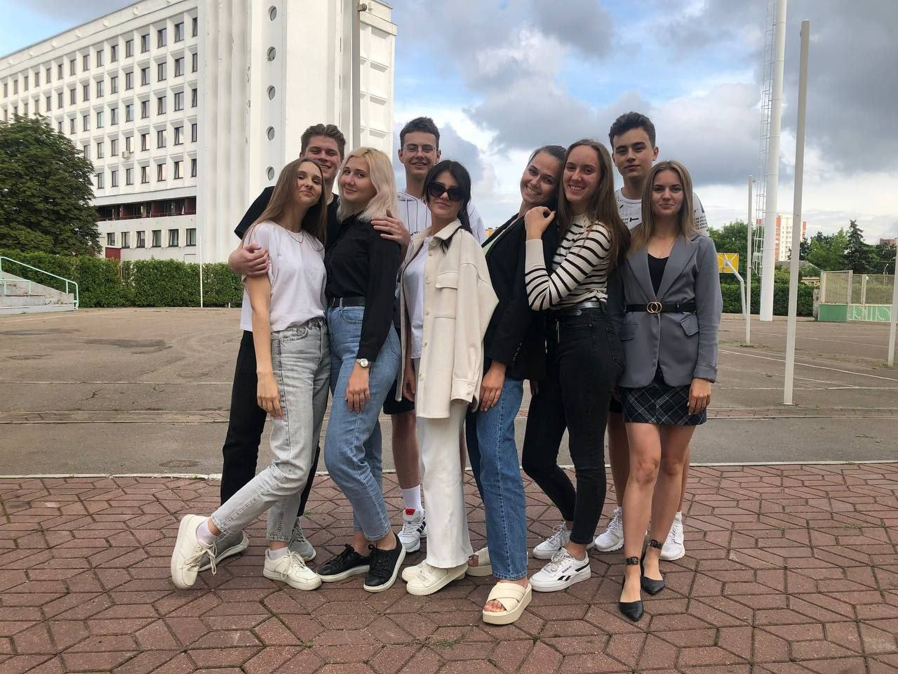

Это лето было очень необычным и интересным для меня. Опустим тот момент, что оно началось с экзаменационной сессии, но зато послее неё началось все самое интересно. Уже в июле я начала работу в штабе "Абитуриент-2021". Там я познакомилась с будущими первокурсниками да и со многими своими коллегами. Мы очень сплотились с ребятами из штаба и вместе помогали абитуриентам и их родителям больше узнать об Академии управления.
После завершения работы в штабе я вернулась домой. через пару дней мы всей семьёй отправились в путешествие по Беларуси. А именно мы поехали в Брестскую область и непосредственно в сам Брест. Заезжали в замок в Коссово, усадьбу Швыковских в Пружанах и завершением дня стала прогулка по всем известной пешеходной улице в Бресте.